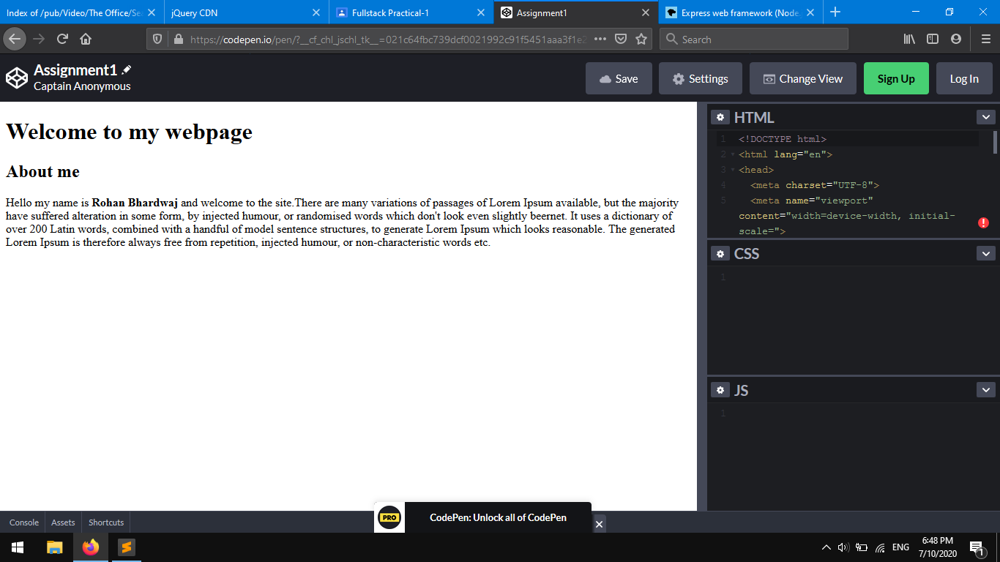
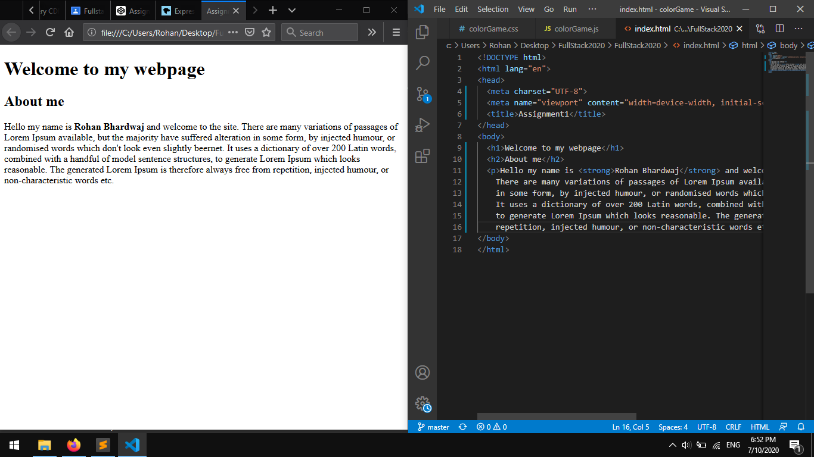

Practical 1: Create a Web page including HTML basic skeleton using Offline HTML editor and Online Sandbox Environment
Welcome to fullstack course
About Course
When we say Full Stack Development, it basically refers to the development of frontend and backend of an application.
The full stack web development includes all three layers i.e.
- The Presentation Layer which deals with UI or UX
- Business Logic Layer which deals with data validation
- Database Layer which deals with steps of an idea to the finished product
Output
Online HTML Editor

Offline HTML Editor
